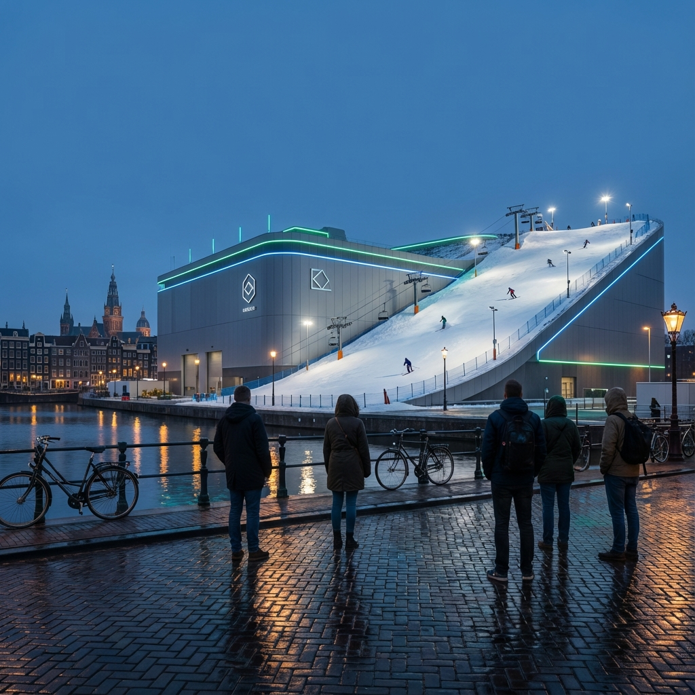

Wat zijn onze 21e eeuwse kathedralen of Eiffeltorens?
De kathedralen en de Eiffeltorens waren visuele totems die signaleerden waar een samenleving naar toe bewoog. We hebben dringend nieuwe totems nodig. Hieronder vind je alvast vier ideeën.

Tot diep in de 20e eeuw waren kathedralen de zichtbare totems van de kerk als machtsysteem en sociale orde. De kathedraal herinnerde elk lid in de gemeenschap eraan dat onderwerping aan het geloof het leidende principe was over hoe mensen zich moesten verhouden tot elkaar, tot autoriteit en tot het leven en de dood. Je kon het gebouw niet missen. Het domineerde het landschap, de skyline en het collectieve bewustzijn en onderbewustzijn. En dat was precies de bedoeling.
De kathedralen waren niet de enige totems. De Eiffeltoren was een monument voor de industriële kunnen van Frankrijk. Het was puur statement, zonder praktisch nut. De monumentale schachtblokken van C-Mine in Beringen of in Eijsden zijn trotse referentiepunten die je herinneren aan de geschiedenis van de mijnbouw en aan de mensen die de regio gevormd hebben. Zelfs de collectie van torens op de Zuidas in Amsterdam signaleert: Dit is het kloppende zakenhart van Nederland.
Deze week leerde ik van Ron Meyer iets wat me aan het denken zette. Het neerhalen van de Lange Jan-schoorsteen in Heerlen, vrij kort na de sluiting van de mijnen, ontnam de regio ook haar symbool van trots voor het systeem dat zowel het sociale als het economische leven had ondersteund. De steenkool was letterlijk en figuurlijk de motor onder de regio.
Die geschiedenis is in Nederland, veel meer dan in Vlaanderen, uitgewist. Daardoor heeft de regio haar identiteit verloren. Geen centrale kathedraal, geen mijnschacht, geen toren die signaleert waar deze gemeenschap voor staat en op welke toekomst wordt ingezet.
Het grote verschil met vandaag
Hier zit een interessant probleem: de systemen die vandaag de motor vormen van onze welvaart zijn onzichtbaar geworden. Sterker nog: ze worden zelfs vaker geframed als last dan als trots.
De elektrificatie van ons energiesysteem levert windmolenparken en zonnepanelen op die vooral als landschapsvervuiling worden gezien. Toch leveren ze op middellange termijn de doodsteek aan geopolitieke chantage door oliestaten. ASML is een motorblok onder de spectaculaire welvaartsgroei van de Brainportregio. Toch krijgt het nijpende woningtekort dat het oplevert meer aandacht dan de fenomenale rol die het bedrijf speelt in onze toekomstige welvaart. We hebben het meest innovatieve voedselproductiesysteem ter wereld, dat Europa en zelfs de wereld van zorgeloze toegang tot voedsel garandeert. Maar we zien vooral de stikstofcrisis, boze boeren en industriële weilanden die ecologische woestijnen geworden zijn.
Dit is geen toeval. Moderne welvaartsystemen hebben drie structurele kenmerken die het creëren van totems bemoeilijken:
- Ze zijn verdeeld in plaats van geconcentreerd. Een kathedraal is één monumentaal punt. Een moderne energievoorziening bestaat uit duizend windmolens, een chipfabriek in Taiwan, zonnepanelen op elk dak. Geen enkel punt om je trots aan op te hangen.
- Ze zijn complex in plaats van begrijpelijk. Iedereen begreep wat een mijnschacht deed: daar kwam steenkool uit die huizen verwarmde. Maar wie begrijpt EUV-lithografie op 13.5 nanometer?
- En hun externaliteiten zijn nu zichtbaar, terwijl hun waarde later komt. Een kathedraal had geen negatieve bijeffecten. Een windpark heeft visuele impact vandaag, maar energieonafhankelijkheid over twintig jaar. De kosten zijn concreet, de baten abstract.
Het resultaat? We verstoppen datacenters achter geluidsschermen, camoufleren windmolens als 'landschapskunst', plaatsen chipfabrieken achter beveiligingshekken. Alsof we ons schamen voor de systemen die ons rijk maken.
De nieuwe totempalen
Maar het hoeft niet zo te zijn. Stel je voor:
Het offshore windpark als nieuwe Nederlandse skyline
Vanaf het strand zie je de energieonafhankelijkheid als een majestueuze kathedraal aan de horizon staan.
De windmolen definieerde Nederland al eeuwen – deze moderne reuzen kunnen hetzelfde doen. Niet weggemoffeld, maar omarmd als het industriële monument dat de geopolitieke chantage van oliestaten doorbreekt.
De verticale farm als voedselkathedraal
Een glazen toren in het hart van de stad, waar je van buitenaf het groen ziet groeien over meerdere verdiepingen. Een levend monument dat laat zien dat voedselproductie niet langer betekent dat we landschap moeten opofferen.
Niet primair vanwege de productiviteit, maar als visueel statement over hoe we de toekomst voeden.
Het geothermische kuuroord als energiemonument

Wat als we de warmte uit de aarde niet alleen gebruiken voor verwarming, maar ook als publieke ervaring? Een majestueus kuuroord, verlicht door aardwarmte, waar baden gratis toegankelijk zijn. Geen verstopping achter hekken, maar een viering van overvloed.
Warmte-overschot wordt gezondheid. Overvloed wordt gemeenschap. Technologie wordt beleving.
De batterijfabriek als symbool van onafhankelijkheid
Europa's gigafabrieken ontworpen als statements van onafhankelijkheid. Niet verscholen achter hekken, maar gevierd. Met skipistes die het hele jaar door koel gehouden worden door de overvloed aan energie die ze produceren. Opslag is onafhankelijkheid, onafhankelijkheid is veiligheid, veiligheid is welvaart.
(geïnspireerd door Copenhill in Kopenhagen)
De vraag die blijft hangen
De Eiffeltoren was op zich nutteloos. Het was een puur statement die wou vertellen: "Kijk wat we kunnen bouwen." In scherpe tegenstelling hierop, zijn onze moderne systemen hyper-functioneel en daardoor niet inspirerend.
Dat leidt tot een prikkelende vraag: Is het ontbreken van moderne totems een symptoom van onze politieke weerstand tegen deze systemen? Of juist de oorzaak ervan?
Want misschien geldt voor systemen hetzelfde als voor mensen: wat je niet ziet, waardeer je niet. En wat je niet waardeert, bescherm je niet.
Wil je leren hoe je weerstand tegen verandering doorbreekt en systemen werkelijk transformeert?
In mijn boek Gamechangers leer je het leverage points framework van Donella Meadows toe te passen en de immuniteitsreacties van systemen te neutraliseren. Of boek een workshop waarin we samen de verborgen krachten in jouw systeem zichtbaar maken.